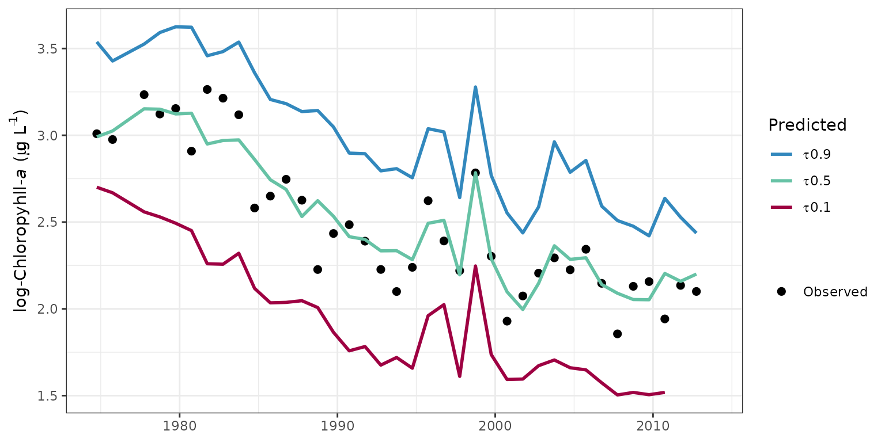
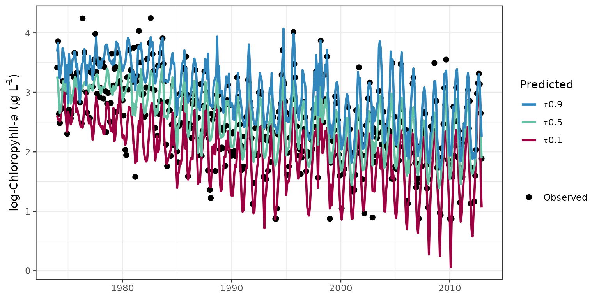
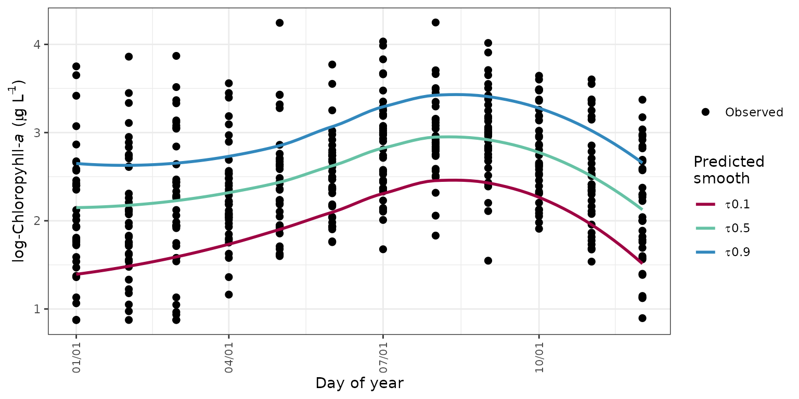
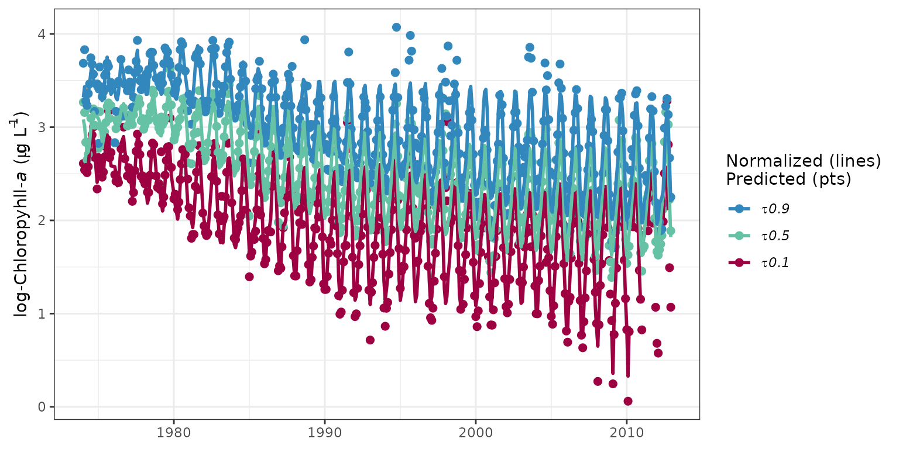
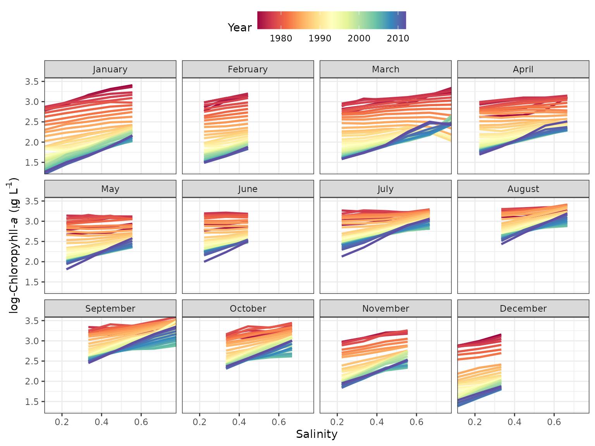
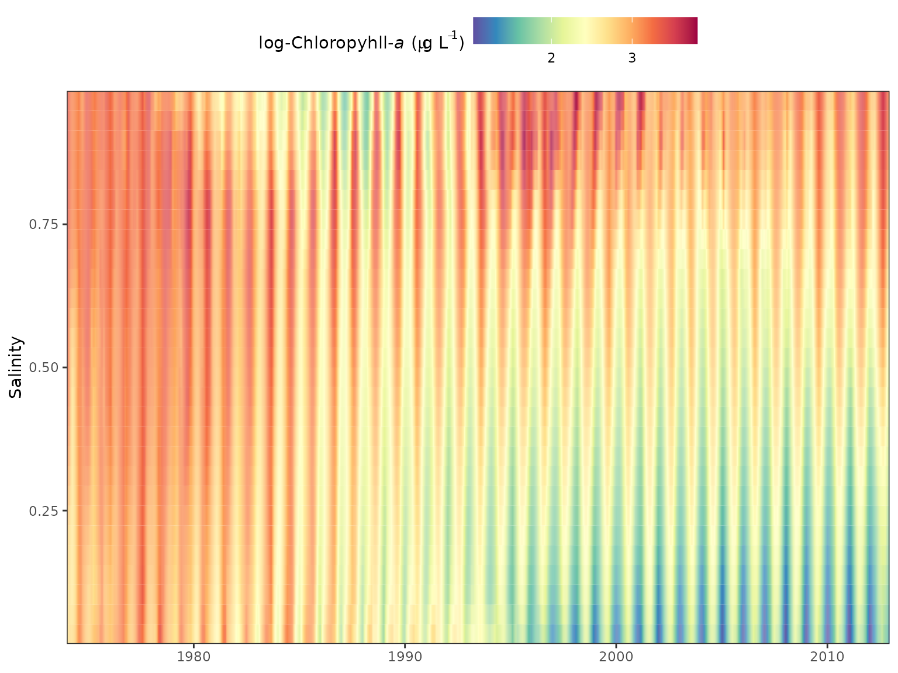

Brief description of WRTDS for tidal waters
The WRTDS tidal method relates a water qualty response variable to salinity (or flow) and time to evaluate trends in long-term water quality time series. The functional form of the model is a simple regression that relates the natural log of response variable to decimal time and salinity/flow on a sinuisoidal annual time scale (i.e., cyclical variation by year). Two basic models can be created that include fitting the response as a conditional mean or as a conditional quantile. Quantile regression models can be used to characterize trends for conditional distributions of the response, e.g., the median or 90th percentile. An additional advantage of quantile regression is that bias associated with back-transformation of predicted values in log-space to a linear space does not occur because estimates are equivariant to non-linear, monotonic transformations. Mean models are more restrictive and also require an estimation of the back-transformation bias parameter. For both model types, left-censored observations below the minimum detection limit can be included in the data. Quantile models use a method that builds on the Kaplan-Meier approximation for a single-sample survival function by generalizing to conditional regression quantiles. The mean response is characterized using a similar approach for regression with a parametric survival model.
The WRTDS approach obtains fitted values of the response variable by estimating regression parameters for each unique observation. Specifically, a unique regression model is estimated for each point in the period of observation. Each model is weighted by month, year, and salinity/flow such that a unique set of regression parameters for each observation in the time series is obtained. For example, a weighted regression centered on a unique observation weights other observations in the same year, month, and similar salinity/flow with higher values, whereas observations for different time or salinity/flow values receive lower weights. This weighting approach allows estimation of regression parameters that vary in relation to observed conditions. Default window widths of six months, 10 years, and half the range of salinity/flow are used. Optimal window widths can also be identified using cross-validation to evaluate the ability of the model to generalize with novel datasets.
Predicted values are based on an interpolation matrix from the regression. A sequence of salinity/flow values based on the minimum and maximum values for the data are used to predict the response variable using the observed month and year. Model predictions are linearly interpolated from the grid using the salinity/flow value closest to the actual for each date. Normalized values are also obtained from the prediction grid that allow an interpretation of trends that are independent of any variation related to salinity/flow changes. Normalized predictions are obtained for each observation date by assuming that salinity/flow values for the same month in each year are equally likely to occur across the time series. For example, normalization for January 1st 1974 considers all salinity/flow values occuring on January 1st for each year in the time series as equally likely to occur on the observed data. A normalized value for January 1st 1974 is the average of the predicted values using each of the salinity/fow values as input, while holding month and year constant. Normalization across the time series is repeated for each observation to obtain salinity- or flow-normalized predictions.
Using the functions
library(WRTDStidal)The adaptation of WRTDS in tidal waters is designed to predict or normalize a water quality variable as a function of time, season, and salinity/flow. For example, Beck and Hagy (2015) describe an adaptation of WRTDS to model chloropyll concentrations in estuaries as a function of time, season, and salinity. The salinity or flow variable is meant to capture the variation in the response variable that is related to changes in freshwater inputs. The choice of salinity or flow is problem-specific depending on the location. For example, monitoring stations in upper estuaries are more strongly affected from stream inflow such that flow data from a dischage gage would be a more appropriate than a salinity time series. Exploratory analyses should identify whether a water quality response variable is more linked to a salinity or discharge flow record. The WRTDStidal package can use the time series interchangable.
The raw data are typically a data.frame with rows as
monthly observations (ascending time) and four columns as date, response
variable, salinity/flow, and lower detection limit for the response
variable. The chldat dataset that accompanies this package
shows the proper format for using the functions.
# import data
data(chldat)
# data format
str(chldat)
#> 'data.frame': 452 obs. of 4 variables:
#> $ date: Date, format: "1974-01-01" "1974-02-01" ...
#> $ res : num 3.42 3.86 2.64 2.48 2.71 ...
#> $ flo : num 0.28 0.347 0.238 0.239 0.228 ...
#> $ lim : num 0.875 0.875 0.875 0.875 0.875 ...The tidfit and tidfitmean datasets are also
included in this package to illustrate examples using fitted model
objects. The datasets were created to predict and normalize chlorophyll
concentrations for the tenth, median, and ninetieth conditional quantile
distributions, and the conditional mean response, respectively. They can
be loaded as follows or recreated from chldat using the
following code.
# load a fitted model, quantiles
data(tidfit)
# load a fitted model, mean
data(tidfitmean)
# or recreate the quanitile models from chldat
tidfit <- modfit(chldat, tau = c(0.1, 0.5, 0.9))
# or recreate the mean model from chldat
tidfitmean <- modfit(chldat, resp_type = 'mean')The functions have been developed following S3
documentation, with specific methods for tidal and
tidalmean objects. In most cases, the functions have
methods for both object types. The raw data can be converted to a
particular object type using the tidal or
tidalmean functions or by simply executing the model
fitting functions with raw data (e.g., modfit). The raw
data frame must be a particular format if the latter approach is used,
as described above and demonstrated below. The raw data can be plotted
with obsplot once the object is created.
# create a tidal object from a data frame, or use tidalmean function
tidobj <- tidal(chldat)
# plot the raw data
obsplot(tidobj)The tidal and tidalmean object classes
contain the data and multiple attributes. The data and attributes are
updated after the WRTDS model is created.
# data
head(tidobj)
#> date res flo lim not_cens day_num month year
#> 1 1974-01-01 3.417727 0.4100012 0.8754687 TRUE 0.005479452 1 1974
#> 2 1974-02-01 3.860730 0.5086014 0.8754687 TRUE 0.090410959 2 1974
#> 3 1974-03-01 2.639057 0.3490211 0.8754687 TRUE 0.164383562 3 1974
#> 4 1974-04-01 2.484907 0.3509642 0.8754687 TRUE 0.249315068 4 1974
#> 5 1974-05-01 2.708050 0.3345128 0.8754687 TRUE 0.331506849 5 1974
#> 6 1974-06-01 2.740840 0.3009137 0.8754687 TRUE 0.416438356 6 1974
#> dec_time
#> 1 1974.005
#> 2 1974.090
#> 3 1974.164
#> 4 1974.249
#> 5 1974.332
#> 6 1974.416
# names of the attributes
names(attributes(tidobj))
#> [1] "names" "row.names" "class" "floobs_rng" "reslab"
#> [6] "flolab"
# load a fitted tidal object, or use tidfitmean
data(tidfit)
# fitted data
head(tidfit)
#> date res flo lim not_cens day_num month year
#> 1 1974-01-01 3.417727 0.4100012 0.8754687 TRUE 0.005479452 1 1974
#> 2 1974-02-01 3.860730 0.5086014 0.8754687 TRUE 0.090410959 2 1974
#> 3 1974-03-01 2.639057 0.3490211 0.8754687 TRUE 0.164383562 3 1974
#> 4 1974-04-01 2.484907 0.3509642 0.8754687 TRUE 0.249315068 4 1974
#> 5 1974-05-01 2.708050 0.3345128 0.8754687 TRUE 0.331506849 5 1974
#> 6 1974-06-01 2.740840 0.3009137 0.8754687 TRUE 0.416438356 6 1974
#> dec_time fit0.1 fit0.5 fit0.9 norm0.1 norm0.5 norm0.9
#> 1 1974.005 2.610429 3.267295 3.685544 2.570321 3.083240 3.319924
#> 2 1974.090 2.541529 3.157350 3.831174 2.555630 3.008398 3.435083
#> 3 1974.164 2.545622 2.838006 3.280516 2.598238 2.863887 3.368876
#> 4 1974.249 2.511704 2.649719 3.233701 2.581767 2.717951 3.281687
#> 5 1974.332 2.576503 2.709492 3.360528 2.593957 2.734914 3.346043
#> 6 1974.416 2.747688 2.811803 3.463858 2.745408 2.825647 3.474432
# fitted attributes
names(attributes(tidfit))
#> [1] "names" "row.names" "floobs_rng" "reslab" "flolab"
#> [6] "half_wins" "fits" "flo_grd" "nobs" "class"
#> [11] "predonobs"Fitting a WRTDS tidal model
The quickest implementation of WRTDS is to use the
modfit function, which is a wrapper for several other
functions that complete specific tasks. The following text will also be
printed in the console that describes current actions and progress of
model creation.
# get wrtds results, quantile model
mod <- modfit(chldat)
#>
#> Estimating interpolation grids for tau = 0.5, % complete...
#>
#> 5 10 15 20 25 30 35 40 45 50 55 60 65 70 75 80 85 90 95 100
#>
#> Estimating predictions...
#>
#> tau = 0.5
#>
#>
#> Normalizing predictions...
#>
#> tau = 0.5
# get wrtds mean model
mod <- modfit(chldat, resp_type = 'mean')
#>
#> Estimating interpolation grid for mean response, % complete...
#>
#> 5 10 15 20 25 30 35 40 45 50 55 60 65 70 75 80 85 90 95 100
#>
#> Estimating predictions...
#>
#>
#> Normalizing predictions...The results include the original data.frame with
additional columns for parameters used to fit the model, model
predictions, and the respective normalized predictions. The
modfit function implements four individual functions which
can be used separately to create the model.
# this is equivalent to running modfit
# modfit is a wrapper for tidal, wrtds, respred, and resnorm functions
# pipes from the dplyr (magrittr) package are used for simplicity
library(dplyr)
# quantile model
mod <- tidal(chldat) %>% # creates a tidal object
wrtds %>% # creates wrtds interpolation grids
respred %>% # get predictions from grids
resnorm # get normalized predictions from grids
# mean model
mod <- tidalmean(chldat) %>% # creates a tidal object
wrtds %>% # creates wrtds interpolation grids
respred %>% # get predictions from grids
resnorm # get normalized predictions from gridsAll arguments that apply to each of the four functions in the
previous chunk can be passed to the modfit function to
control parameters used to fit the WRTDS model. Examples in the help
file for modfit illustrate some of the more important
arguments to consider. These may include changing the conditional
quantiles to predict, increasing or decreasing the precision of the
salinity or flow values used to create the model interpolation grids,
changing the window widths of the weighted regression, or suppressing
the output on the console.
## fit the model and get predicted/normalized chlorophyll data
# default median fit, quantile model
# grids predicted across salinity range with ten values
mod <- modfit(chldat)
## fit different quantiles and smaller interpolation grid
mod <- modfit(chldat, tau = c(0.2, 0.8), flo_div = 5)
## fit with different window widths
# half-window widths of one day, five years, and 0.3 salinity
mod <- modfit(chldat, wins = list(1, 5, 0.3))
## suppress console output
mod <- modfit(chldat, trace = FALSE)Evaluating the results
Several plotting methods are available that can be used to view the
results of a fitted model object. These functions apply to both quantile
and mean models. The examples below show use with quantile models fit
through the tenth, median, and ninetieth percentile distributions of
chlorophyll in the sample datasets. The fitplot function is
the simplest way to plot the predicted or normalized values of the
response variables for relevant conditional quantiles. The default
parameters for this function produce a ggplot object with some
aesthetics that I chose. The arguments for this function include options
to plot specific quantiles, normalized values, annual aggregations, or
to convert values back to log-space. The pretty argument
can also be used to suppress the default plot aesthetics. This is useful
for producing a `bare-bones’ ggplot object that can be further
modified.
# load data from the package for the example
data(tidfit)
# plot using fitplot function
fitplot(tidfit)
# plot non-aggregated results
fitplot(tidfit, annuals = FALSE)
The sliceplot function is a modification of
fitplot that can be used to plot selected time slices from
the results. Specically, all results for a particular month across all
years can be viewed. This is useful for evaluating between-year
differences in results for constant season. The slices
argument is used to specify which months to view.
# plot january, july as defaults
sliceplot(tidfit)Similar to sliceplot, the fitmoplot
function creates facetted plots for each month rather than showing each
month on the same plot.
# fits by month, normalized
fitmoplot(tidfit, predicted = F)Seasonal variation from the observed data can be viewed with the
seasplot function by showing the observed annual data on a
common y-axis. The year value is removed from the results such that the
y-axis shows only the day of the year. A simple loess (locally
estimated) polynomial smooth is added to show the seasonal trend in the
results, where the smoother is fit through the model results for the
observed data. The fit can be smoothed through the model predictions or
the flow-normalized predictions, neither of which are shown on the
plot.
seasplot(tidfit)
The seasyrplot function is similar
toseasplot except the model estimates are plotted for each
year as connected lines, as compared to loess lines fit to the model
results. seasyrplot is also similar to
sliceplot except the x-axis and legend grouping variable
are flipped. This is useful for evaluating between-year differences in
seasonal trends.
seasyrplot(tidfitmean, predicted = F)The prdnrmplot function is similar to the
fitplot function with the exception that predicted and
normalized results are shown together. Observed values from the original
response variable are also removed. This plot would typically be used to
evaluate the relative effects of salinity or flow changes on the
response variable given that the normalized results are independent of
changes in freshwater inputs.
# plot predicted, normalized results for each quantile
prdnrmplot(tidfit)
# plot as monthly values
prdnrmplot(tidfit, annuals = FALSE)
The dynaplot function can be used to examine how the
relationship between the resposne varaible and salinity/flow varies
throughout the time series. The interpolation grid that is stored as an
attribute in a fitted tidal object is used to create the plot. All
predicted values for a selected month across all years are plotted in
relation to the range of salinity/flow values that were used to create
the interpolation grid. The plot is limited to the same month throughout
the time series to limit seasonal variation. By default, the function
constrains the salinity/flow values to the fifth and ninety-fifth
percentile of observed values during the month of interest to limit the
predictions within the data domain.
# plot using defaults
# defaults to the fiftieth quantile
dynaplot(tidfit)
Similar plots can be returned using the gridplot
function. These are essentially identical to the plot produced by
dynaplot except a gridded plot is returned that shows
salinity/flow over time with cells colored by values of the response
variable. Multiple months can also be viewed for comparison. Options are
also available to interpolate values for a smoother grid, which is the
default plotting behavior.
# create a gridded plot
# defaults to the fiftieth quantile
gridplot(tidfit)
gridplot(tidfit, month = 'all')
Three-dimensional gridplots can be recreated with plotly:
library(dplyr)
library(plotly)
dat <- attr(tidfitmean, 'fits') %>%
.[[1]] %>%
select(-date, -year, -month, -day) %>%
as.matrix
scene <- list(
aspectmode = 'manual',
aspectratio = list(x = 0.5, y = 1, z = 0.3),
xaxis = list(title = 'Salinity'),
yaxis = list(title = 'Time'),
zaxis = list(title = 'log-Chl')
)
p <- plot_ly(z = ~dat) %>%
add_surface(colors = rev(RColorBrewer::brewer.pal(11, 'Spectral'))) %>%
layout(scene = scene)
pThe wtsplot function can be used to create diagnostic
plots to view different weighting windows and how they are implemented
during weighted regression. The plots illustrate the weights that are
used when fitting a weighted regression in reference to a single
observation. Five plots are produced by the function, each showing the
weights in relation to time and the selected observation (i.e., center
of the weighting window). The top plot shows salinity/flow over time
with the points colored and sized by the combined weight vector. The
remaining four plots show the weights over time for each separate
weighting component (months/days, year, and salinity/flow) and the final
combined vector.
# wt plot
wtsplot(tidfit, ref = '1995-07-01')An alternative method to evaluate model weights is to plot a grid of
the number of observations with weights greater than zero for each
unique date and salinity/flow combination. The nobs grid
attribute in a fitted model has the same dimensions as the interpolation
grid, where each row is a unique date in the original dataset and each
column is a salinity/flow value used to fit each regression (i.e.,
values in the flo_grd attribute). The nobsplot
function creates a gridded plot similar to gridplot showing
the number of observations for each point. In general, low points may
indicate locations in the domain space of the time series where
insufficient data could affect model fit. Note that the minimum number
of observations for any point never falls below 100. The default setting
for getwts, min_obs = TRUE, widens the window
widths in succession until a minimum sample size is returned.
# create a nobsplot
nobsplot(tidfit)Tabular summaries of model performance and trends over time can be
obtained for fitted model objects. See the help files for
wrtdsperf and wrtdstrnd for more
information.
wrtdsperf(tidfit)
#> tau gfit rmse nmse
#> 1 0.1 0.4460786 0.7062318 1.0530866
#> 2 0.5 0.4314374 0.4113140 0.3652858
#> 3 0.9 0.4622937 0.6486773 0.9085381
# setup month, year categories for trend summaries
mobrks <- list(c(1, 2, 3), c(4, 5, 6), c(7, 8, 9), c(10, 11, 12))
yrbrks <- c(-Inf, 1985, 1994, 2003, Inf)
molabs <- c('JFM', 'AMJ', 'JAS', 'OND')
yrlabs <- c('1974-1985', '1986-1994', '1995-2003', '2004-2012')
wrtdstrnd(tidfit, mobrks, yrbrks, molabs, yrlabs)
#> cat chg
#> 1 1974-1985 -10.8098920
#> 2 1986-1994 -26.8103223
#> 3 1995-2003 -12.6940068
#> 4 2004-2012 0.3881047
#> 5 JFM -72.0666410
#> 6 AMJ -50.7080726
#> 7 JAS -33.1198103
#> 8 OND -58.4959633Seasonal Kendall tests can be used to evaluate flow-normalized predictions. This test evaluates monotonic trends using a non-parametric approach that accounts for seasonal variation in the time series.
wrtdstrnd_sk(tidfit, mobrks, yrbrks, molabs, yrlabs)
#> Warning: `cols` is now required when using `unnest()`.
#> ℹ Please use `cols = c(med, tau, slope, chitest, ztest)`.
#> `cols` is now required when using `unnest()`.
#> ℹ Please use `cols = c(med, tau, slope, chitest, ztest)`.
#> cat med tau slope chitest ztest
#> 1 1974-1985 21.171745 -0.4882334 -0.62562353 2.368091e-02 5.398681e-12
#> 2 1986-1994 11.360865 -0.9766355 -0.40860507 1.000000e+00 2.627767e-36
#> 3 1995-2003 9.246354 -0.9166667 -0.14861032 9.996939e-01 1.364710e-32
#> 4 2004-2012 8.717610 0.1990741 0.02080644 7.639788e-07 1.052157e-02
#> 5 JFM 7.372369 -0.9508020 -0.31484132 9.802877e-01 8.455010e-49
#> 6 AMJ 10.819629 -0.8347669 -0.30022373 8.774386e-01 2.308578e-37
#> 7 JAS 17.679262 -0.7595646 -0.33248583 9.544791e-01 1.683405e-31
#> 8 OND 12.055548 -0.8586627 -0.28668848 7.801474e-01 1.104585e-36
#> perchg
#> 1 -2.9549928
#> 2 -3.5966017
#> 3 -1.6072316
#> 4 0.2386714
#> 5 -4.2705583
#> 6 -2.7748061
#> 7 -1.8806545
#> 8 -2.3780626Selecting window widths
The selection of window widths for fitting weighted regression is a
challenge that represents a tradeoff between model precision and ability
to generalize to novel datasets. Overfitting a model with excessively
small window widths will minimize prediction error but prevent
extrapolation of results to different datasets. Similarly, underfitting
a model with large window widths will reduce precision but will improve
the ability to generalize results to a different dataset. From a
statistical perspective, the optimal window widths are those that find a
balance between over- and under-fitting. Three functions are available
for determining the optimal window widths: wrtdscv,
winsrch_grid, and winsrch_optim. The
wrtdscv evaluates model fit for a specific combination of
window widths and is used iteratively within winsrch_grid
and winsrch_optim. wrtdscv uses k-fold
cross-validation to evaluate the error associated with model predictions
on a novel dataset. The default behavior is to evaluate model
performance with ten folds (k) for the window width combination. The
function separates the dataset into ten disjoint sets, such that ten
models are evaluated for every combination of k - 1 training and
remaining test datasets. That is, the training dataset for each fold is
all k - 1 folds and the test dataset is the remaining fold, repeated k
times. The average prediction error of the training datasets across k
folds provides an indication of model performance. Optimum window widths
will provide errors for the training data that are minimized.
The winssrch_grid and winsrch_optim
functions use wrtdscv iteratively to evaluate multiple
window width combinations. The winsrch_grid function is a
naive approach that evaluates the error associated with a search grid of
window width combinations. The grid can be supplied by the user or is
created by default parameters in the createsrch function.
In both cases, the supplied grid may not contain the optimal solution
such that the function does not provide an exact approach for
identifying window widths. Alternatively, the winsrch_optim
function uses a search algorithm to identify the optimum window widths.
This function is a simple wrapper to the optim function in
the base R installation to iteratively evaluate window widths with the
wrtdscv function. Window widths are searched using the
limited-memory modification of the BFGS quasi-Newton method that imposes
upper and lower bounds for each parameter. Options are available to
change the limits and tolerance criteria for search convergence. Both
winssrch_grid and winsrch_optim can take
several hours and the relative processing times depend on the options.
Examples in the help documents show use of parallel processing to
decrease computation time.